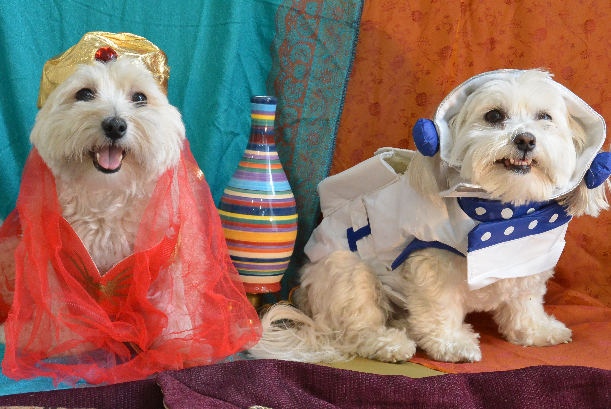

Penny and Lily, Your New Best Friends

The Luse Family dogs have a long history of fame. Follow their careers here and on their Facebook page.
Havanese. Minnesota. Here is our FAVORITE MOVIE
Summary
Welcome to the official webpage of Penny and Lily! Each month we will post the picture from our famous, themed dog calendar. We hoep to be selling copies of the calendar starting in 2016, so stay tuned. Enjoy!
About Us
Lily, alpha dog, age 6
As the alpha dog, I prefer the best toys and the premium nap locations. I have a weakness for tennis balls and turkeys. You can usually find me curled up in someone's lap
Penny, wild child, age 2
I am the wild child! I love to play tug-a-war and to hide all the best bones from Lily. You can usually find me rough housing with my cousin, Lennon, or napping on the back of the couch like a cat. I also am always fighting to get more attention than Lily!
History
- For the past 11 years, the Luse Family dogs have starred in a creative, fun, and colorful calendar. Each year we feature a different theme and print over 100 copies. Our calendar currently hangs in the local pet shops and animal hospitals. Several of our pictures have been published in the Minneapolis Star Tribune. Though we are not trained models, we both graduated puppy school and we apply our "sit" and "stay" skills during each shoot. We love bones!
Hobbies
- Chewing
- Sleeping
- Chasing
- Play dates